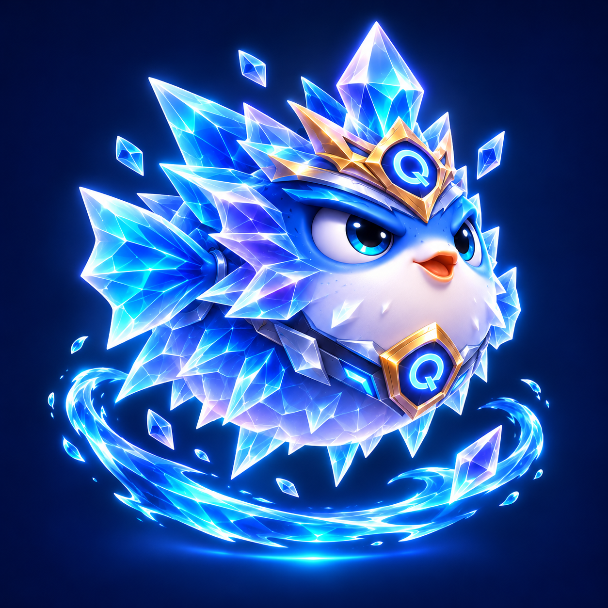
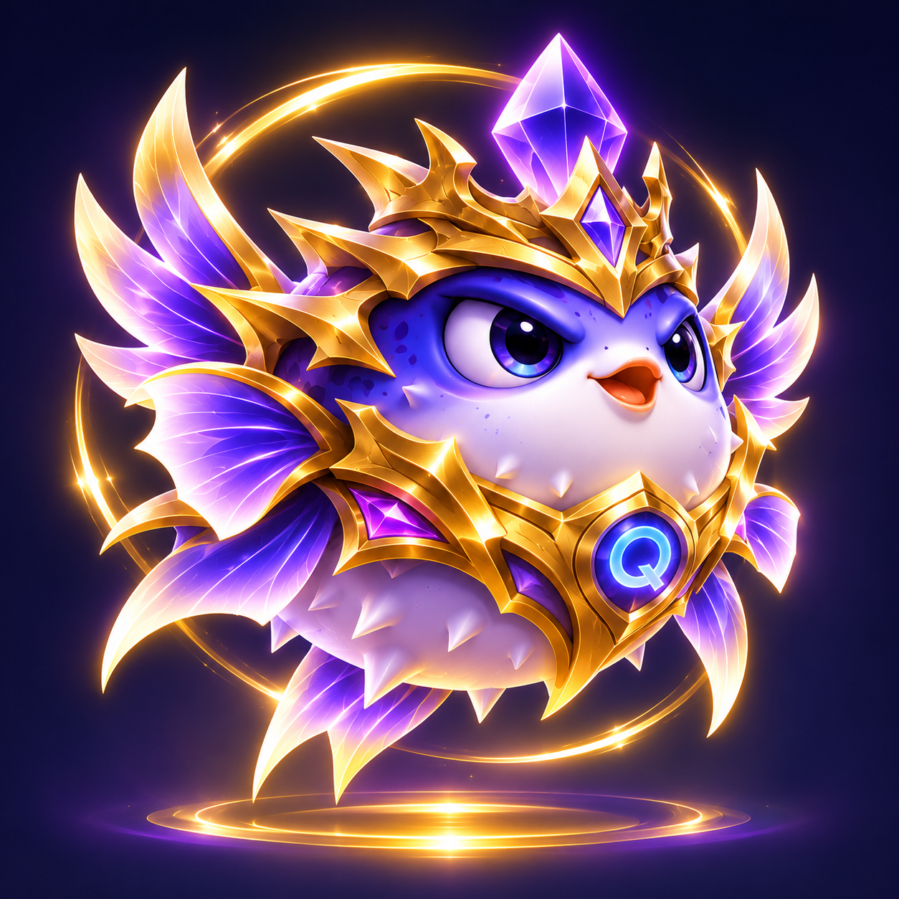

LV.1Origin
LV.1OriginNFT · WEB3 · COMMUNITY
Qexija (QXJ)
The NFT-Driven Web3 Ecosystem
Connect NFT, Web3 and a global community. Built on BNB Smart Chain, Qexija places NFT digital identity at the center of community participation, rewards and evolving applications.

BNB ChainIssuance network
1,000,000,000Fixed total supply · QXJ
500,000,000Planned NFT airdrop pool
2027 Q3Exchange application target window
A New Web3 Experience
Qexija aims to connect digital identity, participation and community value through an NFT-led ecosystem.
NFT as Digital Identity
The six-level pufferfish collection is designed as a visual identity system. Different levels may support membership recognition, access, community activities and future application privileges as features are developed.
Community-led Growth
Qexija plans to connect holders, creators and contributors through transparent rules, community campaigns and practical Web3 utilities. Product features will be introduced in phases.
Qexija NFT Collection
Six visual evolution stages, each with a distinct personality and design language.
LV.1Origin LV.2AwakeningLV.3Explorer
LV.2AwakeningLV.3Explorer LV.4Mystic
LV.4Mystic
LV.5Crystal
LV.6AscendantNFT Airdrop Rewards
A planned allocation of 500 million QXJ is dedicated to NFT ecosystem rewards. Eligibility, claim schedules and distribution rules should be published before each campaign.
500,000,000 QXJPlanned NFT reward pool
6 LevelsNFT identity progression
On-chainTransparent distribution records
LV.1 NFT Rewards30,000,000 · 6%
LV.2 NFT Rewards50,000,000 · 10%
LV.3 NFT Rewards70,000,000 · 14%
LV.4 NFT Rewards90,000,000 · 18%
LV.5 NFT Rewards110,000,000 · 22%
LV.6 NFT Rewards150,000,000 · 30%
The reward pool and tier breakdown are project allocation plans, not promises of guaranteed returns. Actual distribution is subject to published rules and on-chain transactions.
QXJ Tokenomics
Core token parameters and the current published allocation framework.
Token Information
Token nameQexija
SymbolQXJ
NetworkBNB Smart Chain
StandardBEP-20
Total supply1,000,000,000 QXJ
Decimals18
Contract address
0x0f94663834869872dbbd89A2fd8Ec965232db4fC
View token on BscScan ↗The deployed token design is described as fixed supply, 18 decimals, no owner controls, no additional minting and no transaction tax. Verify contract behavior directly on-chain.
Token Allocation · 1 Billion QXJ
1BQXJ · Total Supply
NFT Airdrop Rewards500M · 50%
Community Rewards200M · 20%
Liquidity Provision100M · 10%
Ecosystem Development100M · 10%
Marketing & Partnerships70M · 7%
Strategic Reserve30M · 3%
Allocation figures are the project's planning framework. Confirm wallet addresses, vesting and on-chain transfers before describing these allocations as executed.
Ecosystem Applications
A phased roadmap for expanding NFT utility and community participation.
NFT Identity
Digital membership and benefits
GameFi
Games and reward experiences
Marketplace
NFTs, items and membership
Community
Governance and proposals
More Utilities
Expanding Web3 use cases
Roadmap
Milestones are targets and may change as development, compliance and market conditions evolve.
2026 Q4
Foundation
- Official website and brand
- Token information disclosure
- Community growth
2027 Q1
NFT Launch
- NFT collection launch
- Airdrop system development
- Membership utility testing
2027 Q2
Ecosystem Expansion
- Community and app expansion
- NFT utility development
- Partnership exploration
2027 Q3
Exchange Application Target
- Prepare applications to Binance and OKX
- Subject to independent exchange review and approval
BINANCEApplication target
OKXApplication target
2027 Q4+
Long-term Development
- Expand Web3 applications
- Global community partnerships
- Iterate based on user needs
Binance and OKX are independent third-party exchanges. Their logos are used only to identify intended application targets; no listing, partnership, endorsement or approval is implied.
LONG-TERM VISION
Build a more connected Web3 experience.
The project's long-term aspirational price objective is $0.50 per QXJ. This is a goal only, not a forecast or guarantee.